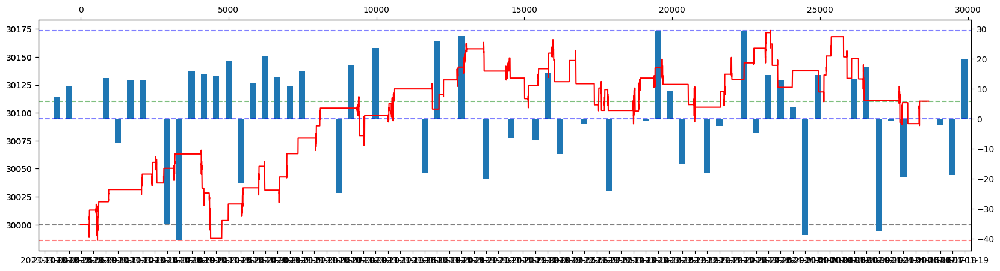
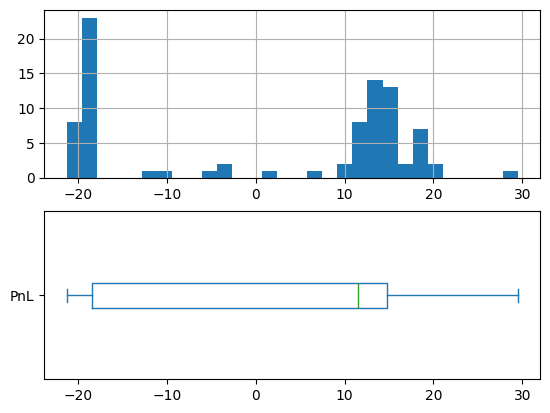
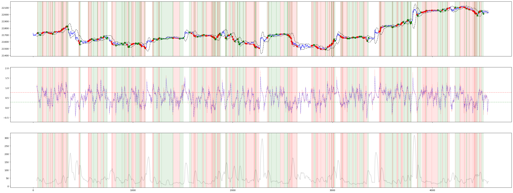

Experiment: BBSS + RSI: Doesn’t work#
import pandas as pd
from glob import glob
import matplotlib.pyplot as plt
import talib
from tqdm.notebook import trange, tqdm
# from option_history import get_nifty, get_option_chain
import backtesting as bt
import warnings
warnings.filterwarnings('ignore')
def load(file_):
try:
_df = pd.read_csv(file_, parse_dates=True)
_df.datetime = pd.to_datetime(_df.datetime)
_df['date'] = _df.datetime.dt.date
_df.set_index('datetime', inplace=True)
return _df
except Exception as e:
return pd.DataFrame()
def find_threshold(df, timeperiod: int = 14):
groups = []
for _, group in df.groupby('date'):
group['rsi'] = talib.RSI(group.close, timeperiod=14)
group['scaled_rsi'], _, _ = scale_by_bb(
group.rsi,
timeperiod=timeperiod
)
group['scaled_close'], _, _ = scale_by_bb(
group.close,
timeperiod=timeperiod
)
groups.append(group)
df = pd.concat(groups)
poi_bb_buy = (df['scaled_close'] * df.buy)
poi_bb_sell = (df['scaled_close'] * df.sell)
poi_rsi_buy = (df['scaled_rsi'] * df.buy)
poi_rsi_sell = (df['scaled_rsi'] * df.sell)
buy_q75 = poi_bb_buy.dropna().quantile(0.5)
sell_q25 = poi_bb_sell.dropna().quantile(0.5)
buy_rsi_q75 = poi_rsi_buy.dropna().quantile(0.5)
sell_rsi_q25 = poi_rsi_sell.dropna().quantile(0.5)
return (buy_q75, sell_q25), (buy_rsi_q75, sell_rsi_q25)
def scale_by_bb(
series: pd.Series,
deviation: int = 2,
timeperiod: int = 20
):
upper, _, lower = talib.BBANDS(
series,
timeperiod=timeperiod,
nbdevup=deviation,
nbdevdn=deviation
)
return (series - lower) / (upper - lower), upper, lower
def mark_events(data, ref_frame=5):
data = data.copy()
data['sell'] = (
data['close'] == data['close'].shift(-ref_frame).rolling(2 * ref_frame).max()).astype(int).replace(0, None)
data['buy'] = (
data['close'] == data['close'].shift(-ref_frame).rolling(2 * ref_frame).min()).astype(int).replace(0, None)
data['hold'] = data.apply(lambda row: int(
not (row['sell'] or row['buy'])), axis=1)
return data
def load_historical_data(path_pattern, ref_frame=5):
file_df = pd.DataFrame(
[
{
'stock_code': file_.split('/')[-2],
'path': file_,
} for file_ in glob(path_pattern)
]
)
if file_df.empty:
return pd.DataFrame()
df_map = {}
for stock, group in tqdm(file_df.groupby('stock_code'), desc=path_pattern):
df_map[stock] = pd.concat(
list(
map(
load,
sorted(group.path.tolist())
)
)
).sort_index()
nifty_df = df_map[stock]
if 'only_date' in nifty_df.columns:
nifty_df.drop(columns=['only_date'], inplace=True)
groups = []
for _, group in nifty_df.groupby(nifty_df.index.date):
groups.append(
mark_events(
group, # [['open', 'high', 'low', 'close']],
ref_frame=ref_frame
)
)
return pd.concat(groups)
# def load_historical_data(path_pattern):
# file_df = pd.DataFrame([
# {
# 'stock_code': file_.split('/')[-2],
# 'path': file_,
# } for file_ in glob(path_pattern)
# if 'options_history' not in file_ and 'OPTIONS' not in file_ and 'CALL' not in file_ and 'PUT' not in file_
# ])
# df_map = {}
# for stock, group in tqdm(file_df.groupby('stock_code')):
# df_map[stock] = pd.concat(
# list(
# map(
# load,
# sorted(group.path.tolist())
# )
# )
# ).sort_index()
# nifty_df = df_map[stock]
# nifty_df = nifty_df.sort_index().drop(
# columns=['exchange_code', 'stock_code', 'volume'])
# if 'only_date' in nifty_df.columns:
# nifty_df.drop(columns=['only_date'], inplace=True)
# groups = []
# for _, group in nifty_df.groupby('date'):
# group = mark_events(group, ref_frame=5)
# groups.append(group)
# return pd.concat(groups)
training_data = pd.concat(
[
load_historical_data(
'/workspace/nifty/NIFTY/201*.csv'
), load_historical_data(
'/workspace/nifty/NIFTY/2020*.csv'
), load_historical_data(
'/workspace/nifty/NIFTY/2021*.csv'
), load_historical_data(
'/workspace/nifty/NIFTY/2022*.csv'
), load_historical_data(
'/workspace/nifty/NIFTY/20230*.csv'
)
]
)
test_data = pd.concat(
[
load_historical_data(
'/workspace/nifty/NIFTY/20231*.csv'
), load_historical_data(
'/workspace/nifty/NIFTY/2024*.csv'
)
]
)
records = []
for i in trange(5, 45):
bb_thresholds, rsi_thresholds = find_threshold(training_data, timeperiod=i)
records.append({
'timeperiod': i,
'bb_buy': bb_thresholds[0],
'bb_sell': bb_thresholds[1],
'rsi_buy': rsi_thresholds[0],
'rsi_sell': rsi_thresholds[1],
})
thresholds_df = pd.DataFrame(records)
thresholds_df.set_index('timeperiod').plot()
<Axes: xlabel='timeperiod'>
file_df = pd.DataFrame([
{
'stock_code': file_.split('/')[-2],
'path': file_,
} for file_ in (
glob('/workspace/nifty/NIFTY/202312*.csv') +
# glob('/workspace/nifty/NIFTY/2024*.csv') +
[]
)
if 'options_history' not in file_ and 'OPTIONS' not in file_ and 'CALL' not in file_ and 'PUT' not in file_
])
df_map = {}
for stock, group in tqdm(file_df.groupby('stock_code')):
df_map[stock] = pd.concat(
list(
map(
load,
sorted(group.path.tolist())
)
)
).sort_index()
opt_df = df_map[stock]
opt_df = opt_df.sort_index().drop(
columns=['exchange_code', 'stock_code', 'volume'])
opt_df.tail()
| close | high | low | open | date | |
|---|---|---|---|---|---|
| datetime | |||||
| 2023-12-29 15:25:00 | 21727.25 | 21729.15 | 21722.50 | 21723.35 | 2023-12-29 |
| 2023-12-29 15:26:00 | 21730.90 | 21731.45 | 21725.10 | 21726.00 | 2023-12-29 |
| 2023-12-29 15:27:00 | 21736.30 | 21738.40 | 21729.35 | 21731.20 | 2023-12-29 |
| 2023-12-29 15:28:00 | 21734.65 | 21739.35 | 21729.65 | 21736.40 | 2023-12-29 |
| 2023-12-29 15:29:00 | 21728.30 | 21735.65 | 21724.70 | 21734.10 | 2023-12-29 |
import numpy as np
def reversal(series, threshold, inv=False):
op = np.less_equal if inv else np.greater_equal
rop = np.greater_equal if inv else np.less_equal
filters = op(series, threshold)
filters &= op(series.shift(1), threshold)
filters &= op(series.shift(2), threshold)
filters &= rop(series.shift(1), series.shift(2))
filters &= rop(series.shift(1), series)
return filters.iloc[-1]
class BBStrategy(bt.Strategy):
signal = None
SL = 10
TP = 10
TIMEPERIOD = 25
def _is_trading_window(self):
if (
self.data.index[-1].hour == 15 and
self.data.index[-1].minute > 15
) or (
self.data.index[-1].hour == 9 and
self.data.index[-1].minute < 30
):
return False
return True
def init(self):
self._open = self.data.Open
self._high = self.data.High
self._low = self.data.Low
self._close = self.data.Close
self._rsi = talib.RSI(self.data.Close, timeperiod=self.TIMEPERIOD)/100
self._scaled_close, _, _ = scale_by_bb(
self.data.Close,
timeperiod=self.TIMEPERIOD
)
self._scaled_rsi, _, _ = scale_by_bb(
self._rsi,
timeperiod=self.TIMEPERIOD
)
self._scaled_close = self.I(
lambda x: x,
self._scaled_close,
name='scaled_close'
)
try:
(
_,
self._buy_bb,
self._sell_bb,
self._buy_rsi,
self._sell_rsi
) = thresholds_df[thresholds_df.timeperiod == self.TIMEPERIOD].values[0]
except Exception as e:
print(e, self.TIMEPERIOD)
raise e
def next(self):
if not self._is_trading_window():
self.position.close()
return
if (
reversal(pd.Series(self._scaled_close), self._sell_bb, inv=False)
# bt.lib.crossover(self._scaled_close, self._sell_bb)
# and bt.lib.crossover(self._scaled_rsi, self._sell_rsi)
):
self.position.close()
self.sell(
size=1,
sl=self.data.High + self.SL,
tp=self.data.Low - self.TP,
)
if (
reversal(pd.Series(self._scaled_close), self._buy_bb, inv=True)
# bt.lib.crossover(self._buy_bb, self._scaled_close)
# and bt.lib.crossover(self._buy_rsi, self._scaled_rsi)
):
self.position.close()
self.buy(
size=1,
sl=self.data.Low - self.SL,
tp=self.data.High + self.TP,
)
test = bt.Backtest(
opt_df.rename(
{
'open': 'Open',
'high': 'High',
'low': 'Low',
'close': 'Close',
},
axis=1
),
BBStrategy,
cash=30000,
commission=.0000,
exclusive_orders=True,
trade_on_close=True,
)
stats = test.run()
fig, ax = plt.subplots(figsize=(20, 5))
stats._equity_curve['date'] = stats._equity_curve.index.date
ax.axhline(stats._equity_curve.Equity.max(), color='b', ls='--', alpha=0.5)
ax.axhline(stats._equity_curve.Equity.min(), color='r', ls='--', alpha=0.5)
ax.axhline(stats._equity_curve.Equity.iloc[-1], color='g', ls='--', alpha=0.5)
ax.axhline(30000, color='k', ls='--', alpha=0.5)
stats._equity_curve.reset_index().Equity.plot(ax=ax.twiny(), color='r')
print(stats)
Start 2023-12-01 09:09:00
End 2023-12-29 15:29:00
Duration 28 days 06:20:00
Exposure Time [%] 42.772668
Equity Final [$] 30002.6
Equity Peak [$] 30076.3
Return [%] 0.008667
Buy & Hold Return [%] 7.597269
Return (Ann.) [%] -1.062668
Volatility (Ann.) [%] 2.467136
Sharpe Ratio 0.0
Sortino Ratio 0.0
Calmar Ratio 0.0
Max. Drawdown [%] -0.92149
Avg. Drawdown [%] -0.107139
Max. Drawdown Duration 17 days 04:44:00
Avg. Drawdown Duration 1 days 10:38:00
# Trades 406
Win Rate [%] 37.192118
Best Trade [%] 0.175935
Worst Trade [%] -0.082293
Avg. Trade [%] 0.000019
Max. Trade Duration 0 days 00:47:00
Avg. Trade Duration 0 days 00:08:00
Profit Factor 1.00145
Expectancy [%] 0.000033
SQN 0.011572
_strategy BBStrategy
_equity_curve ...
_trades Size Entry...
dtype: object
def profit_quantile(ser: pd.Series) -> float:
return (np.nan_to_num(ser._trades.PnL.quantile(.5), -9999999))
# return (np.nan_to_num(ser._trades.PnL.quantile(.25), -9999999) * ser['# Trades']).sum()
opt = test.optimize(
TIMEPERIOD=range(5, 45),
SL=range(2, 20, ),
TP=range(2, 30, ),
# maximize='Equity Final [$]',
maximize=profit_quantile,
)
opt
(opt._trades.PnL.quantile([.05, .25, .5, .75, .95]))
0.05 -20.4725
0.25 -18.5500
0.50 12.1500
0.75 15.0625
0.95 18.8450
Name: PnL, dtype: float64
{
'metric': 'optimize_on',
'SL': opt._strategy.SL,
'TP': opt._strategy.TP,
'TIMEPERIOD': opt._strategy.TIMEPERIOD,
'SQN': opt['SQN'],
'Equity Final [$]': opt['Equity Final [$]'],
'Win Rate [%]': opt['Win Rate [%]'],
'Avg. Trade [%]': opt['Avg. Trade [%]'],
'Sharpe Ratio': opt['Sharpe Ratio'],
'# Trades': opt['# Trades'],
'Expectancy [%]': opt['Expectancy [%]'],
'Return [%]': opt['Return [%]'],
'Trades Per Day': (opt['# Trades']/max(1, opt['Duration'].days)),
'Expected Final': (opt['Equity Final [$]'] - 30000) * .8 * 50 * 5 - 35 * opt['# Trades'],
}
{'metric': 'optimize_on',
'SL': 18,
'TP': 8,
'TIMEPERIOD': 5,
'SQN': 0.36322125464379296,
'Equity Final [$]': 30033.499999999996,
'Win Rate [%]': 57.14285714285714,
'Avg. Trade [%]': 0.005530593427049979,
'Sharpe Ratio': 1.038224895689797,
'# Trades': 28,
'Expectancy [%]': 0.005563605952891134,
'Return [%]': 0.11166666666665453,
'Trades Per Day': 1.0,
'Expected Final': 5719.999999999272}
# 'SL': 31,
# 'TP': 2,
# 'TIMEPERIOD': 29,
OptStrat = BBStrategy
OptStrat.TP = opt._strategy.TP
OptStrat.SL = opt._strategy.SL
OptStrat.TIMEPERIOD = opt._strategy.TIMEPERIOD
# OptStrat.TP = 40
# OptStrat.SL = 43
# OptStrat.TIMEPERIOD = 36
# file_df = pd.DataFrame([
# {
# 'stock_code': file_.split('/')[-2],
# 'path': file_,
# } for file_ in (
# # glob('/workspace/nifty/NIFTY/2023*.csv') +
# glob('/workspace/nifty/NIFTY/2024*.csv')
# )
# if 'options_history' not in file_ and 'OPTIONS' not in file_ and 'CALL' not in file_ and 'PUT' not in file_
# ])
# df_map = {}
# for stock, group in tqdm(file_df.groupby('stock_code')):
# df_map[stock] = pd.concat(
# list(
# map(
# load,
# sorted(group.path.tolist())
# )
# )
# ).sort_index()
# nifty_df = df_map[stock]
# nifty_df = nifty_df.sort_index().drop(
# columns=['exchange_code', 'stock_code', 'volume'])
test = bt.Backtest(
test_data.rename(
{
'open': 'Open',
'high': 'High',
'low': 'Low',
'close': 'Close',
},
axis=1
),
OptStrat,
cash=30000,
commission=.0000,
exclusive_orders=True,
trade_on_close=True,
)
stats = test.run()
fig, ax = plt.subplots(figsize=(20, 5))
stats._equity_curve['date'] = stats._equity_curve.index.date
ax.axhline(stats._equity_curve.Equity.max(), color='b', ls='--', alpha=0.5)
ax.axhline(stats._equity_curve.Equity.min(), color='r', ls='--', alpha=0.5)
ax.axhline(stats._equity_curve.Equity.iloc[-1], color='g', ls='--', alpha=0.5)
ax.axhline(30000, color='k', ls='--', alpha=0.5)
xax = ax.twinx()
(stats._equity_curve.groupby('date').Equity.last().diff()).plot.bar(ax=xax)
# # .plot(ax=ax)
yax = ax.twiny()
stats._equity_curve.reset_index().Equity.plot(ax=yax, color='r')
xax.axhline(0, color='b', ls='--', alpha=0.5)
plt.show()
fig, ax = plt.subplots(2, 1, )
stats._trades.PnL.hist(bins=30, ax=ax[0])
stats._trades.PnL.plot.box(ax=ax[1], vert=False)
# quantile([.05, .25, .5, .75, .95])
print(stats)
stats._trades.PnL.quantile([.05, .25, .5, .75, .95])


Start 2023-10-03 09:09:00
End 2024-01-19 15:29:00
Duration 108 days 06:20:00
Exposure Time [%] 6.087563
Equity Final [$] 30110.45
Equity Peak [$] 30173.65
Return [%] 0.368167
Buy & Hold Return [%] 10.272953
Return (Ann.) [%] 1.080666
Volatility (Ann.) [%] 0.839375
Sharpe Ratio 1.287464
Sortino Ratio 1.803312
Calmar Ratio 3.836192
Max. Drawdown [%] -0.281703
Avg. Drawdown [%] -0.042726
Max. Drawdown Duration 27 days 23:27:00
Avg. Drawdown Duration 1 days 15:30:00
# Trades 87
Win Rate [%] 58.62069
Best Trade [%] 0.139554
Worst Trade [%] -0.112843
Avg. Trade [%] 0.00669
Max. Trade Duration 0 days 01:59:00
Avg. Trade Duration 0 days 00:20:00
Profit Factor 1.192283
Expectancy [%] 0.006722
SQN 0.72366
_strategy BBStrategy
_equity_curve ...
_trades Size EntryB...
dtype: object
0.05 -19.990
0.25 -18.450
0.50 11.500
0.75 14.775
0.95 18.860
Name: PnL, dtype: float64
opt._trades['wl'] = np.sign(opt._trades.PnL).replace({1: 'Win', -1: 'Loss'})
opt._trades.groupby('wl').PnL.hist(bins=30, alpha=0.5)
wl
Loss Axes(0.125,0.11;0.775x0.77)
Win Axes(0.125,0.11;0.775x0.77)
Name: PnL, dtype: object
# nifty_df.reset_index(inplace=True)
nifty_df.reset_index(inplace=True)
fig, (ax, iax, wax) = plt.subplots(3, 1, figsize=(40, 15), sharex=True)
(
_,
buy_bb,
sell_bb,
_,
_
) = thresholds_df[thresholds_df.timeperiod == OptStrat.TIMEPERIOD].values[0]
trades_df = stats._trades
scaled_close, ub, lb = scale_by_bb(
nifty_df.close,
timeperiod=OptStrat.TIMEPERIOD
)
width = (ub-lb)
wax.plot(width.index, width, color='k', alpha=.2)
# tax = ax.twinx()
ax.plot(nifty_df.close, alpha=.7, color='blue')
ax.plot(ub, alpha=.7, ls='--', color='k')
ax.plot(lb, alpha=.7, ls='--', color='k')
for trade in trades_df.to_dict('records'):
ax.plot(
[trade['EntryBar'], trade['ExitBar']],
[trade['EntryPrice'], trade['ExitPrice']],
c=('g' if trade['PnL'] >= 0 else 'r'),
marker='X'
)
# iax.scatter(
# trade['EntryBar'],
# trade['scaled_close'],
# c=('g' if trade['PnL'] >= 0 else 'r'),
# marker='X'
# )
ax.axvline(trade['EntryBar'], c='g', alpha=.1)
ax.axvspan(
trade['EntryBar'],
trade['ExitBar'],
color=('g' if trade['PnL'] >= 0 else 'r'),
alpha=.1
)
iax.axvspan(
trade['EntryBar'],
trade['ExitBar'],
color=('g' if trade['PnL'] >= 0 else 'r'),
alpha=.1
)
wax.axvspan(
trade['EntryBar'],
trade['ExitBar'],
color=('g' if trade['PnL'] >= 0 else 'r'),
alpha=.1
)
iax.axhline(sell_bb, color='r', alpha=.4, ls='--')
iax.axhline(buy_bb, color='g', alpha=.4, ls='--')
iax.plot(scaled_close, color='r', alpha=.2, ls='--')
iax.plot(scaled_close.rolling(3).mean(), color='b', alpha=.4, ls='--')
plt.show()

nifty_df['scaled_close'], nifty_df['ub'], nifty_df['lb'] = scale_by_bb(
nifty_df.close,
timeperiod=OptStrat.TIMEPERIOD
)
ndf = nifty_df.merge(
trades_df[['EntryBar', 'EntryPrice', 'EntryTime', 'PnL']],
left_on='index',
right_on='EntryBar',
how='left',
).merge(
trades_df[['ExitBar', 'ExitPrice', 'ExitTime', 'PnL']],
left_on='index',
right_on='ExitBar',
how='left'
)
ndf
---------------------------------------------------------------------------
KeyError Traceback (most recent call last)
/tmp/ipykernel_74707/781397626.py in ?()
2 nifty_df.close,
3 timeperiod=OptStrat.TIMEPERIOD
4
5 )
----> 6 ndf = nifty_df.merge(
7 trades_df[['EntryBar', 'EntryPrice', 'EntryTime', 'PnL']],
8 left_on='index',
9 right_on='EntryBar',
/workspace/intelligence/logbook/.venv/lib/python3.11/site-packages/pandas/core/frame.py in ?(self, right, how, on, left_on, right_on, left_index, right_index, sort, suffixes, copy, indicator, validate)
10483 validate: MergeValidate | None = None,
10484 ) -> DataFrame:
10485 from pandas.core.reshape.merge import merge
10486
> 10487 return merge(
10488 self,
10489 right,
10490 how=how,
/workspace/intelligence/logbook/.venv/lib/python3.11/site-packages/pandas/core/reshape/merge.py in ?(left, right, how, on, left_on, right_on, left_index, right_index, sort, suffixes, copy, indicator, validate)
165 validate=validate,
166 copy=copy,
167 )
168 else:
--> 169 op = _MergeOperation(
170 left_df,
171 right_df,
172 how=how,
/workspace/intelligence/logbook/.venv/lib/python3.11/site-packages/pandas/core/reshape/merge.py in ?(self, left, right, how, on, left_on, right_on, left_index, right_index, sort, suffixes, indicator, validate)
787 self.right_join_keys,
788 self.join_names,
789 left_drop,
790 right_drop,
--> 791 ) = self._get_merge_keys()
792
793 if left_drop:
794 self.left = self.left._drop_labels_or_levels(left_drop)
/workspace/intelligence/logbook/.venv/lib/python3.11/site-packages/pandas/core/reshape/merge.py in ?(self)
1283 if lk is not None:
1284 # Then we're either Hashable or a wrong-length arraylike,
1285 # the latter of which will raise
1286 lk = cast(Hashable, lk)
-> 1287 left_keys.append(left._get_label_or_level_values(lk))
1288 join_names.append(lk)
1289 else:
1290 # work-around for merge_asof(left_index=True)
/workspace/intelligence/logbook/.venv/lib/python3.11/site-packages/pandas/core/generic.py in ?(self, key, axis)
1840 values = self.xs(key, axis=other_axes[0])._values
1841 elif self._is_level_reference(key, axis=axis):
1842 values = self.axes[axis].get_level_values(key)._values
1843 else:
-> 1844 raise KeyError(key)
1845
1846 # Check for duplicates
1847 if values.ndim > 1:
KeyError: 'index'
import numpy as np
entry_df = ndf[['scaled_close', 'ub', 'lb', 'PnL_x']].dropna()
entry_df['win'] = np.sign(entry_df['PnL_x'])
entry_df['width'] = entry_df['ub'] - entry_df['lb']
for w, g in entry_df.groupby('win'):
g['scaled_close'].plot.box(layout=(2, 1))
plt.show()
# .quantile([.05, .25, .5, .75, .95]).reset_index().pivot(
# index='win', columns='level_1', values='scaled_close'
# )